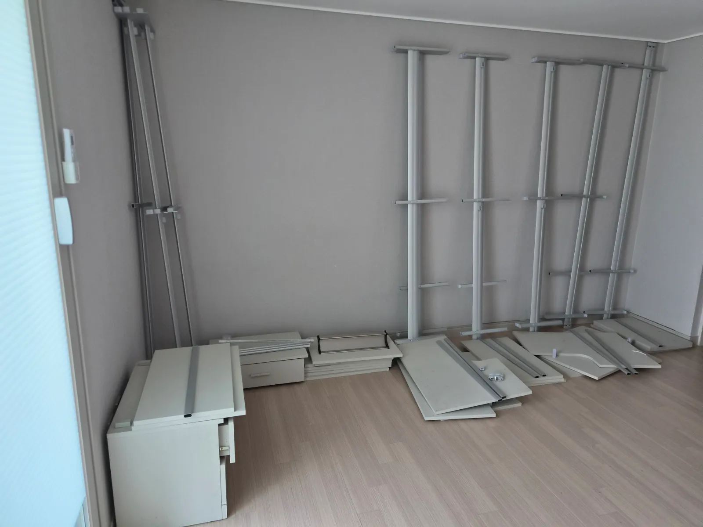

Removal
시스템행거
철거 비용
설치 없이 철거만 필요한 경우도 있습니다.
새 가구를 들이거나 방 용도를 바꾸면서 기존 시스템행거를 철거만 해야 할 때가 있습니다. 철거는 설치보다 간단해 보이지만, 천장에 힘을 주고 있는 폴을 안전하게 풀고 무거운 부속을 내리는 순서가 필요합니다.
철거 비용은 칸 수, 부속, 철거 후 부품을 어떻게 할지에 따라 달라집니다. 철거한 부품은 다시 쓸 수 있게 칸별로 묶어 정리해 드립니다. 벽이나 천장에 고정했던 자리에는 나사 자국이 남을 수 있고, 코니처는 벽 보수는 하지 않는다는 점을 미리 안내드립니다.

Situations
철거만 필요한 경우
새 붙박이장을 들일 때
기존 행거를 먼저 철거해 설치 공간을 비웁니다.
방 용도를 바꿀 때
드레스룸을 아이방이나 서재로 바꾸기 전에 철거합니다.
팔거나 나눔할 때
중고로 넘기기 좋게 부품을 칸별로 정리합니다.
새 집 설치는 나중에 할 때
이사 나가는 집에서 철거만 먼저 진행합니다.
Checklist
철거 비용을 정하는 조건
| 조건 | 확인 내용 | 참고 |
|---|---|---|
| 칸 수 | 폴·선반 개수 | 작업 시간에 영향을 줍니다 |
| 부속 | 서랍장·거울 유무 | 분리 순서를 정합니다 |
| 고정 방식 | 천장 폴, 벽 브래킷 | 고정 자국이 남을 수 있습니다 |
| 철거 후 부품 | 보관·전달 방법 | 상담 때 함께 정합니다 |
| 층수 | 엘리베이터 유무 | 반출 동선을 정합니다 |
Process
철거 진행 순서
사진 상담
철거할 행거 사진으로 작업 범위를 확인합니다.
철거 범위 정하기
전체 철거인지 일부 칸만인지 정합니다.
부속 분리
서랍장·거울 같은 무거운 부속을 먼저 내립니다.
폴·선반 해체
위 칸부터 선반을 내리고 폴을 천천히 풉니다.
부품 정리
다시 쓸 수 있게 칸별로 묶어 둡니다.
FAQ
자주 묻는 질문
철거 후 나사 구멍은 메워 주나요?
벽 보수는 하지 않습니다. 고정 자국이 남을 위치는 작업 전에 알려드리니, 필요하면 보수는 따로 알아보시면 됩니다.
철거한 행거는 어떻게 하나요?
다시 쓰실 계획이면 칸별로 묶어 두고, 그 밖의 처리 방법은 상담 때 함께 정합니다.
일부 칸만 철거할 수 있나요?
네, 남길 칸이 흔들리지 않도록 정리하고 필요한 칸만 철거합니다.
철거만 해도 방문 비용이 드나요?
철거도 방문 작업이라 조건에 따라 비용이 안내됩니다. 사진을 보고 알려드립니다.
나중에 다시 설치할 수 있게 해 주나요?
네, 부품을 섞지 않고 칸별로 정리해 두면 나중에 재설치가 수월합니다.